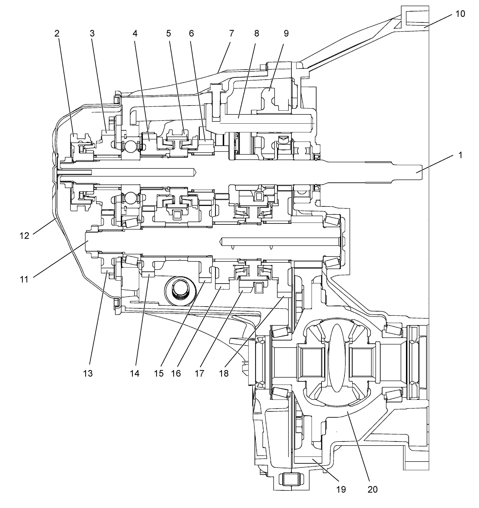
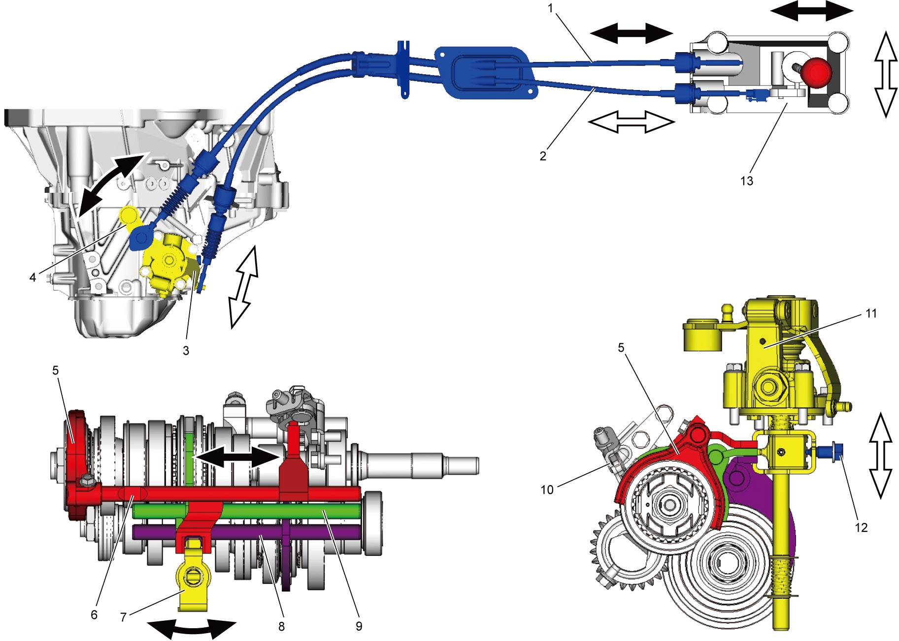
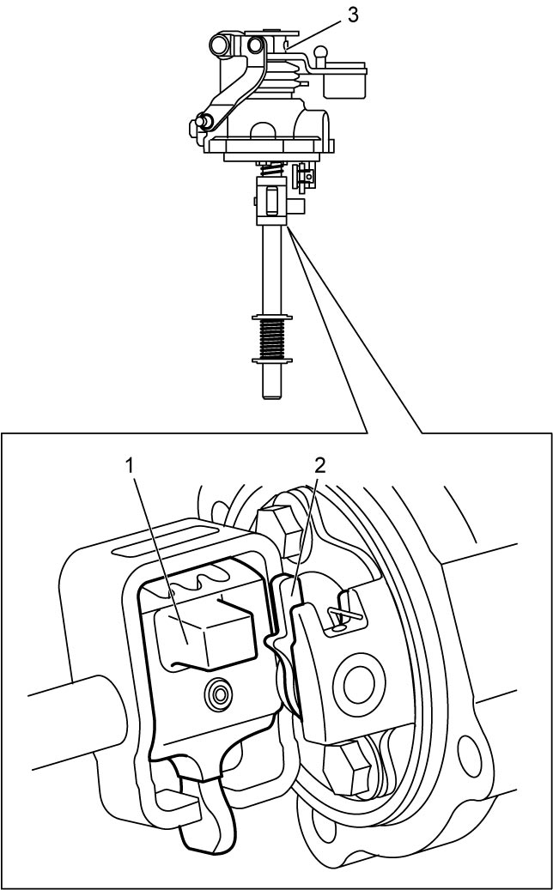
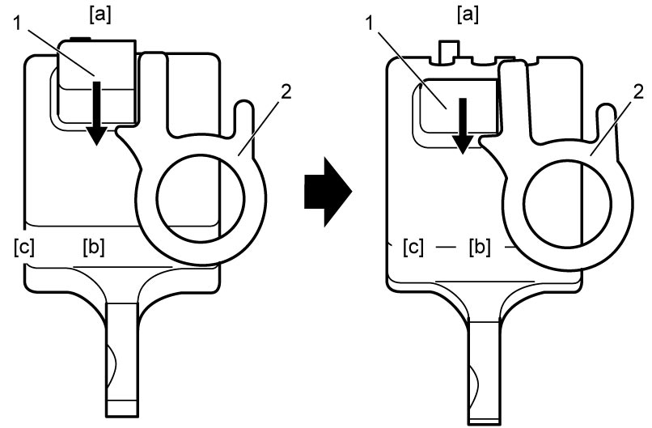
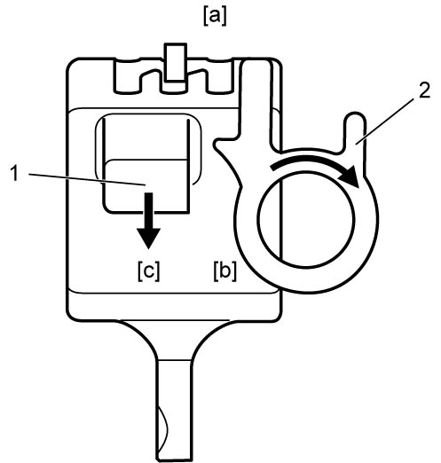
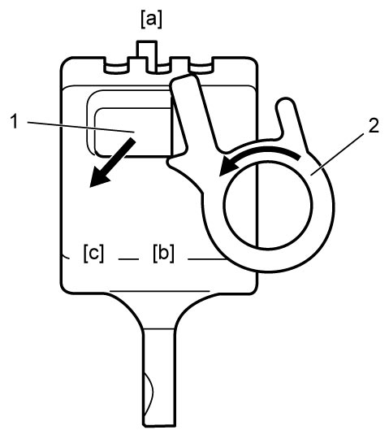

5B
| Manual Transaxle Construction |
The transaxle provides five forward speeds and one reverse speed by means of three synchromesh devices and three shafts: input shaft, countershaft and reverse gear shaft. All forward gears are in constant mesh, and reverse uses a sliding idler gear arrangement.
The low speed sleeve & hub is mounted on countershaft and engaged with countershaft 1st gear or 2nd gear, while the high speed sleeve & hub is mounted on input shaft and engaged with input shaft 3rd gear or 4th gear. The 5th speed sleeve & hub on input shaft is engaged with input shaft 5th gear mounted on the input shaft.
To prevent the cracking noise from the reverse gear when shifting transaxle gear into the reverse gear, the reverse shift braking device is used. This device utilizes the 5th synchromesh, which is the lever synchro type, to apply the brake on the input shaft rotation.
The double cone synchronizing mechanism is provided to 1st and 2nd gear synchromesh devices to improve shift feeling of 1st and 2nd gears.
For servicing, it is necessary to use genuine sealant or its equivalent on mating surfaces of transaxle case which is made of aluminum. The case fastening bolts must be tightened to specified torque by means of torque wrench. It is also important that all parts are thoroughly cleaned with cleaning fluid and air-dried before reassembling.
Further, care must be taken to adjust preload of countershaft taper roller bearings. New synchronizer rings are inhibited from being lapped with respective gear cones using lapping compound before they are assembled.

 "Expand image")
| 1. | Input shaft | 8. | Reverse gear shaft | 15. | Countershaft 3rd gear |
| 2. | 5th speed sleeve & hub | 9. | Reverse idler gear | 16. | Countershaft 2nd gear |
| 3. | Input shaft 5th gear | 10. | Right case | 17. | Low speed sleeve & hub |
| 4. | Input shaft 4th gear | 11. | Countershaft | 18. | Countershaft 1st gear |
| 5. | High speed sleeve & hub | 12. | Side cover | 19. | Final gear |
| 6. | Input shaft 3rd gear | 13. | Countershaft 5th gear | 20. | Differential case |
| 7. | Left case | 14. | Countershaft 4th gear |
Gear Shift Mechanism
The gear shifting control system consists of the following main parts. Movement of gear shift control lever is transmitted to gear shift & select shaft through gear shift and gear select cables.

 "Expand image")
| 1. | Gear shift control cable | 6. | 5th & reverse gear shift shaft | 11. | Gear shift & select shaft assembly |
| 2. | Gear select control cable | 7. | Gear shift & select lever | 12. | Gear shift interlock bolt |
| 3. | Select cable lever | 8. | Low speed gear shift shaft | 13. | Gear shift control lever assembly |
| 4. | Shift cable lever | 9. | High speed gear shift shaft | ||
| 5. | 5th gear shift fork | 10. | Reverse gear shift lever |
Reverse Shift Prevention Mechanism
Construction
In the gear shift lever case, the reverse shift limit yoke (2) which turns around reverse shift limit yoke retainer is provided.
This reverse shift limit yoke (2) restricts the movement of gear shift & select lever (1) to prevent erroneous reverse shifting.

 "Expand image")
| 3. | Gear shift & select shaft assembly |
Operation
1)If shifting directly from 5th [a] to reverse [b] is attempted, the cubic part of the gear shift & select lever (1) is blocked by the projection of the reverse shift limit yoke (2).


 "Expand image")
| [c]: | 4th |
2)The cubic part of the gear shift & select lever (1) pushes the projection of the reverse shift limit yoke (2). The reverse shift limit yoke rotates and pushes the gear shift & select lever toward the neutral position.

 "Expand image")
| [a]: | 5th | [c]: | 4th |
| [b]: | Reverse |
3)If the reverse shifting force is still applied to the shift lever, the cubic part of the gear shift & select lever (1) rides over the projection of the reverse shift limit yoke (2), and the gear is shifted into the 4th. The reverse shift limit yoke returns to its original position.

 "Expand image")
| [a]: | 5th | [c]: | 4th |
| [b]: | Reverse |